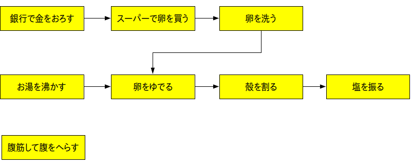
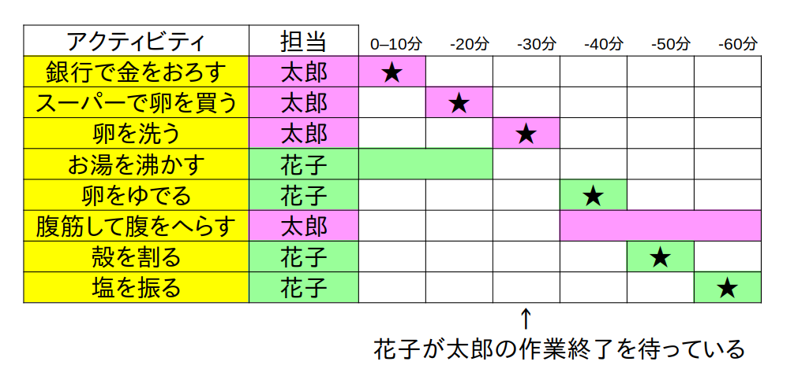
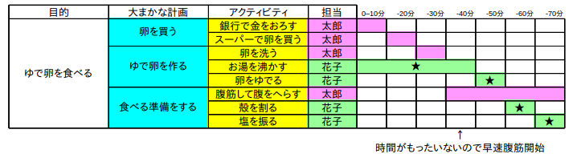

※ 上の図の odg ファイル
では実際に「ゆで卵を食べる」ことを目的とした WBS を作ってみましょう。
まず WBS は以下のようにしました。今回は単純に 3 階層としています。
次は WBS からアクティビティ以外のタスクを削除して依存関係を考えます。
前のページで書いたように依存関係は矢印で表されますので、下の例で言えば「スーパーで卵を買う」ためには「銀行で金をおろす」必要があることが分かります。

※ 上の図の odg ファイル
WBS と依存関係図を描いたら、最後に WBS + ガントチャートを描きます。
依存関係に気を付けつつ、並行で作業できそうなアクティビティは効率よく同じ時間帯に割り振ります。
下の例で言えば買出し作業とお湯を沸かす作業は2人で別々に分担していますので並行作業していることになります。
ただし、お湯を沸かす作業よりも買出しの方が時間がかかっていますので、「金を下ろす」→「卵買う」→「卵洗う」がクリティカルパスになります。
したがって花子はお湯を沸かした後に太郎の作業終了を待つという非効率な時間が生じていますので、その時間帯に花子は別の作業をしても良いでしょう(腹筋とか)。
また作業時間帯は下の例では 10 分単位で区切られていますが、特に決まりは無いので作業内容に合わせて 1 秒とか 1 分とか 1 時間とか 1 日とか自由に決めて結構です。

※ 上のチャートの ods ファイル
さて、クリティカルパスを見つける作業は経験と勘が必要なので慣れていないうちは結構大変なのですが、一般的に
がクリティカルパスになることが多いです。
例えば上の例で、買出しよりもお湯を沸かす時間の方が時間がかかるときは「お湯を沸かす」の方がクリティカルパスになります(図4)。
なお太郎の方に時間の空きが出来てしまうので、下の例では卵を洗ったらすぐに腹筋を開始して無駄な時間が生じないようにしています。
この様に、同時間帯に作業終了待ちをしているメンバーがいないようなガントチャートを作ると作業効率が良くなります。

※ 上のチャートの ods ファイル